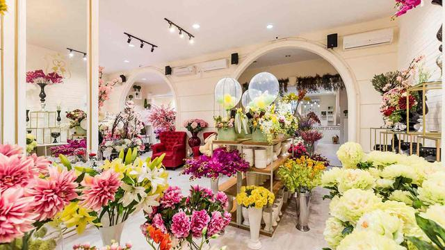
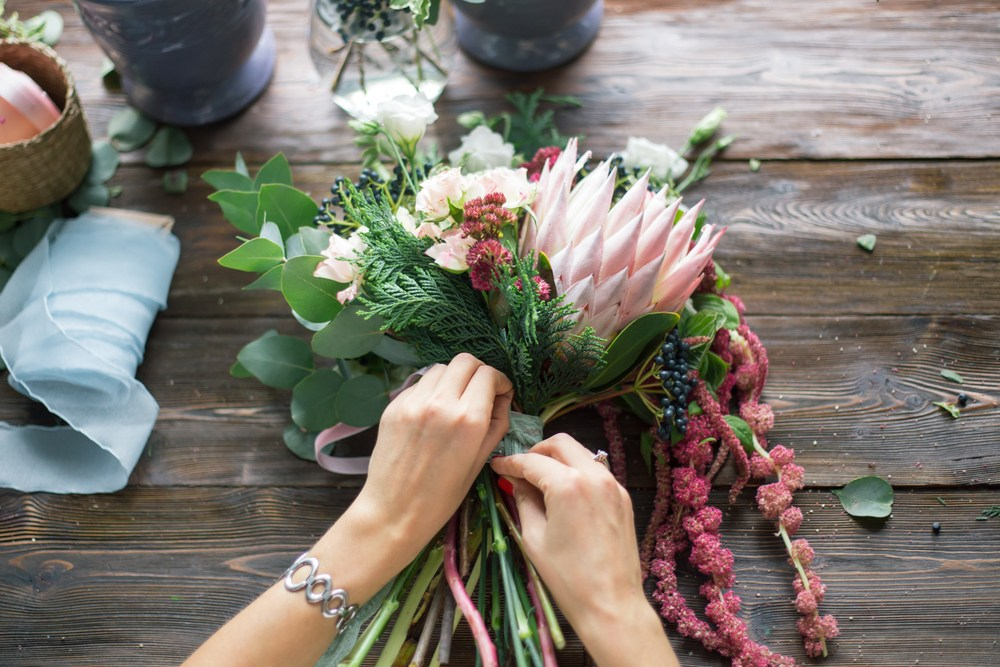

Definisi Floristry

Floristry adalah produksi dan perdagangan bunga.
Ini mencakup perawatan dan penanganan bunga, desain atau merangkai bunga,
merchandising, produksi dan pengiriman bunga. Toko bunga grosir menjual bunga dan perlengkapannya kepada pengecer atau bisnis.
Toko bunga eceran menawarkan produk bunga segar serta layanan terkait langsung ke konsumen.
Menurut sejarah toko bunga pertama dibuka pada tahun 1875.
Floristry menyangkut penanaman, perangkaian bunga serta penjualannya.
Sebagian besar pasokan bahan baku untuk perdagangan bunga berasal dari industri bunga potong.
Toko bunga bersama dengan toko online, adalah gerai utama yang menjual bunga secara khusus, tetapi beberapa supermarket, toko perlengkapan taman,
dan beberapa bisnis lainnya juga menjual bunga.
Desain bunga atau seni merangkai bunga adalah seni membuat rangkaian bunga dalam vas, keranjang, atau media lainnya dengan komposisi dari bunga potong,
dedaunan, tumbuhan, rumput hias, dan bahan lainnya. Seringkali istilah “merangkai bunga” dan “floristry” dianggap sama. Florist atau toko
bunga adalah orang yang menjual bunga dan tanaman, umumnya secara retail.
Pendidikan dan Keahlian untuk Merangkai Bunga

Pendidikan baik formal maupun informal, adalah faktor penting industri floristry. Di luar negeri, perangkai dan seniman floristry yang ahli mengajarkan keahlian mereka
kepada orang yang tertarik pada desain bunga baik sebagai hobi atau untuk karier. Kursus merangkai bunga umumnya tersedia melalui community college, sekolah kejuruan
swasta pasca sekolah menengah, dan asosiasi perdagangan toko bunga profesional. Di indonesia sayangnya belum ada institusi yang mengajarkan seni merangkai bunga secara resmi.
Perangkai bunga di Indonesia umumnya belajar langsung kepada senior mereka dengan bekerja di toko bunga yang sudah ada.
Di Belanda, perguruan tinggi hortikultura pertama didirikan pada tahun 1896 di Naaldwijk. Perguruan tinggi hortikultura kedua didirikan pada tahun 1897 di Aalsmeer.
Kemudian pada tahun 1926, ujian kualifikasi profesional nasional pertama di bidang floristry diadakan di Belanda. Perguruan tinggi hortikultura di Aalsmeer merayakan hari jadinya yang ke-100 pada tahun 1997.
Sejak tahun 1926 perguruan tinggi hortikultura di Aalsmeer dinamakan Rijks Middelbare Tuinbouw School (RTMS).
Pendidikan profesional floristry pertama dimulai di RMTS pada tahun 1968. Profesor pertama dalam floristry di perguruan tinggi hortikultura di Aalsmeer adalah Mr. Theo Boerma.
Pada tahun 1972 Theo Boerma mulai mengajar kursus malam untuk profesional. Pada tahun 1980 Theo Boerma dan istrinya José Boerma mendirikan sekolah floristry milik pribadi pertama; Boerma Instituut International Floral Design School di Aalsmeer.
Diploma tentang Budidaya Bunga diakui oleh pemerintah Belanda hingga tahun 1996. Ketika perbatasan Eropa dibuka, ijazah tidak lagi diperlukan tetapi pelatihan profesional utetap diselenggarakan oleh Boerma Institut.